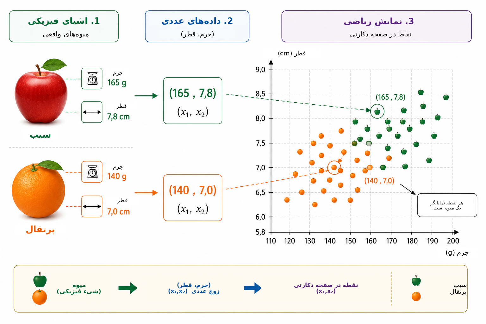
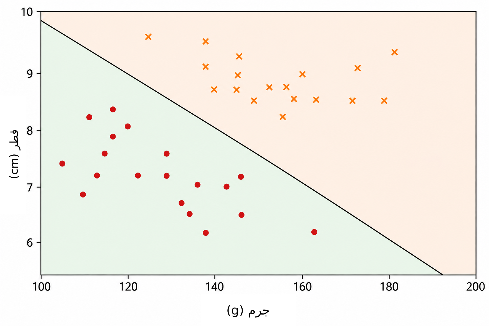
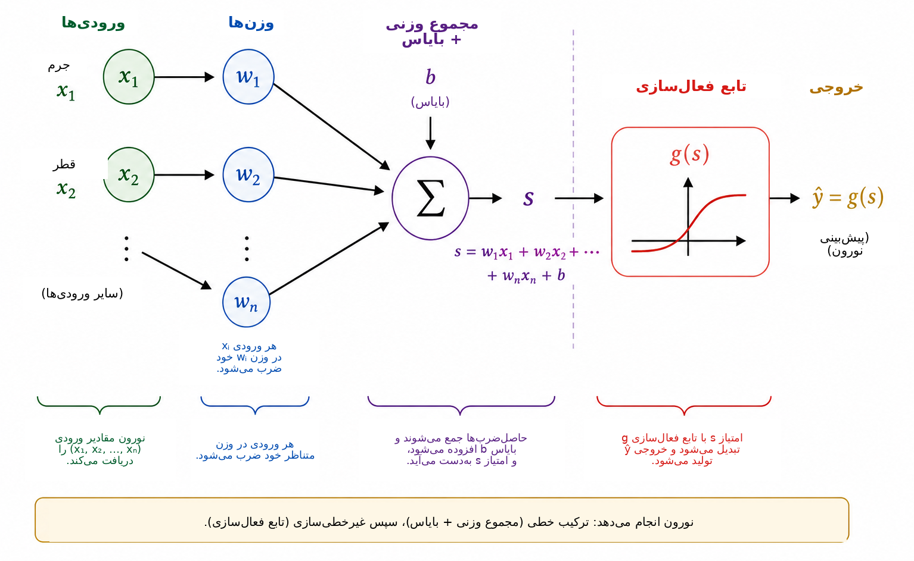
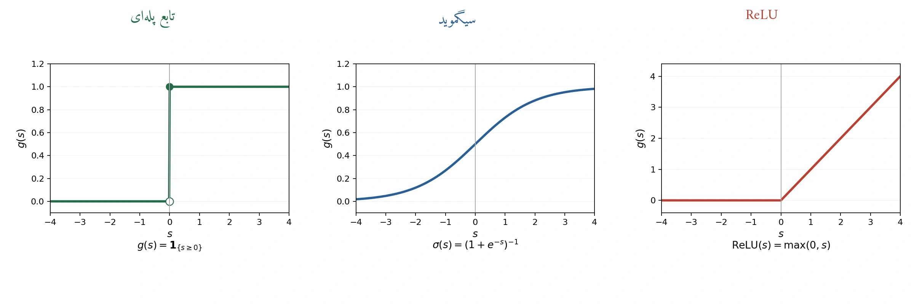
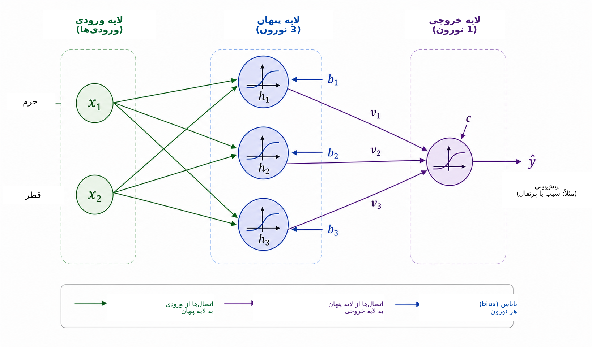
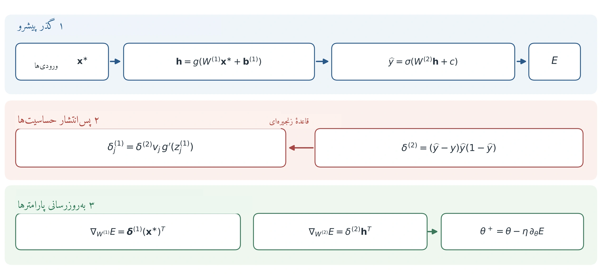
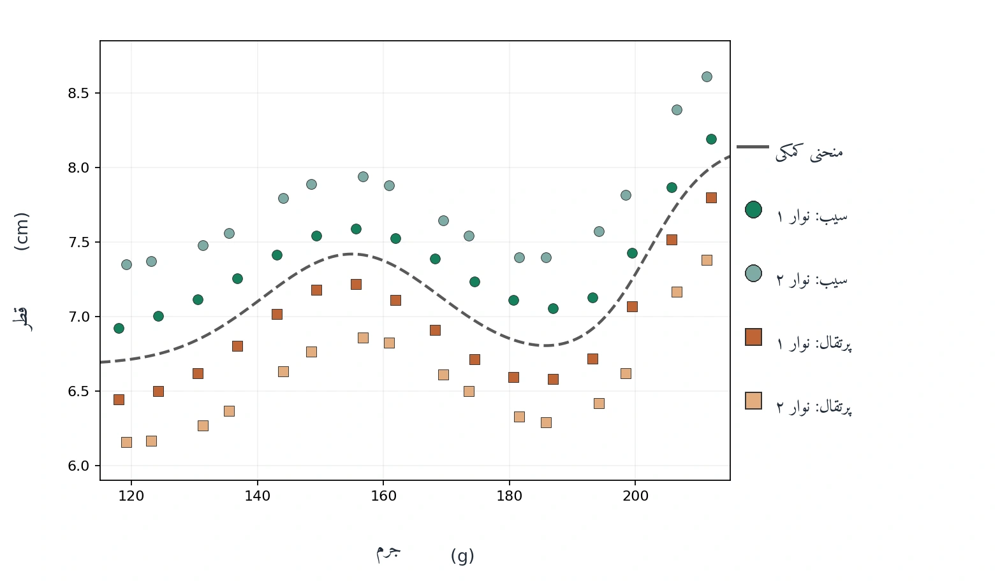
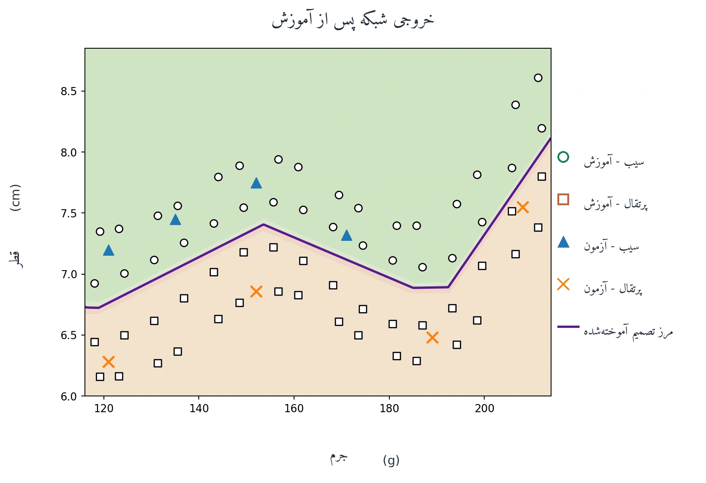

یک رایانه چه زمانی میتواند یاد بگیرد؟
در زندگی روزمره تقریباً بدون آنکه متوجه باشیم تصمیمهای طبقهبندی میگیریم. با نگاه کردن به یک میوه، خیلی سریع تشخیص میدهیم که سیب است یا پرتقال؛ وقتی پیامی به تلفن همراه میرسد، گفتوگویی واقعی را از تبلیغ ناخواسته جدا میکنیم؛ در تحلیلهای پزشکی چند اندازهگیری ممکن است برای پشتیبانی از یک تصمیم با هم ترکیب شوند؛ و در مؤسسات مالی پیش از اعطای اعتبار، اطلاعات گوناگونی ارزیابی میشود. در همه این نمونهها چند ویژگی بهطور همزمان در نظر گرفته میشوند تا یک پاسخ تولید شود.
در بسیاری از برنامههای رایانهای سنتی، قواعدی که این پاسخ را تولید میکنند بهصراحت توسط برنامهنویس نوشته میشوند. این روش هنگامی مناسب است که قواعد شناختهشده باشند و بتوان آنها را روشن بیان کرد. اما وقتی دادهها بسیار متغیرند یا بیان همه شرایط لازم برای یک تصمیم خوب از پیش دشوار است، این رویکرد کارایی کمتری دارد. در اینجا پرسشی طبیعی مطرح میشود:
آیا میتوان برنامهای ساخت که بهجای دریافت قاعده تصمیمگیری از پیش، آن را از مثالها یاد بگیرد؟
این یکی از ایدههای مرکزی یادگیری ماشین است؛ شاخهای از هوش مصنوعی که به روشهای برازش مدلها بر پایه داده میپردازد . در یک مسئله یادگیری نظارتشده، الگوریتم مثالهایی را همراه با پاسخ صحیح آنها دریافت میکند و در پی مدلی هستیم که بتواند برای حالتهایی که در آموزش استفاده نشدهاند نیز پیشبینیهای مفیدی انجام دهد. در میان مدلهای فراوانی که برای این منظور توسعه یافتهاند، شبکههای عصبی مصنوعی در کاربردهایی مانند تشخیص تصویر، پردازش زبان، تحلیل سیگنال و پیشبینی سریهای زمانی اهمیت زیادی پیدا کردهاند .
استفاده از شبکههای عصبی بهعنوان پلی میان ریاضیات، محاسبات و آموزش مدرسه پیشتر توسط Batista و Martins در Professor de Matemática Online بررسی شده است . آنان فعالیتی را ارائه کردند که آموزش معلمان، Python و تشخیص ارقام را با یکدیگر پیوند میدهد. مقاله حاضر مسیر مکملی را دنبال میکند. هدف اصلی ما آشکار کردن ریاضیات درونی یک شبکه عصبی کوچک است: از هندسه تحلیلی آغاز میکنیم و گامبهگام به محاسبه گرادیان و پیادهسازی دستی پسانتشار میرسیم.
با وجود پیچیدگی کاربردهای امروزی، هسته ریاضی یک شبکه عصبی را میتوان با مفاهیمی نسبتاً آشنا معرفی کرد. در سطح پایه، شبکه عصبی ترکیبی از توابع است که پارامترهایشان بر اساس داده تنظیم میشوند. از یک مسئله هندسی ساده آغاز میکنیم، یک خط جداکننده را بهصورت یک نورون مصنوعی بازتفسیر میکنیم، چند نورون را به هم متصل میسازیم، نقش توابع فعالسازی را بررسی میکنیم و نشان میدهیم مشتقها چگونه میتوانند برای تنظیم خودکار پارامترهای شبکه استفاده شوند. سپس یک مثال کوچک اما کامل را در Python پیادهسازی میکنیم و ارتباط مستقیم میان معادلات و کد را حفظ میکنیم.
نمایش ریاضی مسئله
برای فهم نحوه کار یک شبکه عصبی، عمداً با مسئلهای ساده آغاز میکنیم: تمایز میان سیب و پرتقال. یک میوه ویژگیهای بسیاری دارد که میتوانند برای این کار مفید باشند، مانند رنگ، جرم، قطر، بافت و بو. با این حال یک مدل ریاضی اولیه لازم نیست همه این پیچیدگی را در بر گیرد. تنها دو کمیت را که اندازهگیری آنها آسان است به کار میبریم: جرم بر حسب گرم و قطر بر حسب سانتیمتر.
بنابراین هر میوه با یک زوج مرتب نمایش داده میشود \[(x_1,x_2),\] که در آن \[x_1=\text{جرم} \qquad\text{و}\qquad x_2=\text{قطر}.\]
برای نمونه، زوج \((155,\;7.2)\) میوهای با جرم \(155\) g و قطر \(7.2\) cm را نمایش میدهد. با جایگزین کردن شیء فیزیکی با دو اندازهگیری عددی، هر میوه را به نقطهای در صفحه دکارتی نسبت میدهیم: مؤلفه نخست جرم و مؤلفه دوم قطر را مشخص میکند. شکل 1 این نمایش را برای مجموعهای فرضی از سیبها و پرتقالها نشان میدهد.

این تبدیل ظاهر مسئله را تغییر میدهد. بهجای اینکه مستقیماً بپرسیم چگونه یک سیب یا پرتقال را تشخیص دهیم، میتوانیم پرسشی هندسی مطرح کنیم: نقاط متعلق به دو کلاس چگونه در صفحه از یکدیگر جدا میشوند؟ این تغییر دیدگاه در یادگیری ماشین بنیادی است. تصویر، متن، صدا و سیگنالهای آزمایشگاهی همگی پیش از آنکه الگوریتمی بتواند آنها را پردازش کند باید به نمایشهای عددی تبدیل شوند. در مثال ما هر شیء فقط دو مؤلفه دارد؛ در کاربردهای واقعی یک نمایش ممکن است صدها، هزاران یا حتی میلیونها مؤلفه داشته باشد. اصل یکسان است: هر مثال با مجموعهای از اعداد نمایش داده میشود و مدل در پی قاعدهای است که این نمایش را به پاسخ مورد نظر نگاشت کند.
از سادهترین قاعده هندسی ممکن آغاز میکنیم و میپرسیم آیا یک خط راست میتواند نقاط سیب و پرتقال را بهطور مناسب از یکدیگر جدا کند.
یک خط راست بهعنوان طبقهبند
پس از آنکه هر میوه به نقطهای در صفحه دکارتی تبدیل شد، طبقهبندی به یک مسئله هندسی بدل میشود: آیا یک خط راست میتواند سیبها را از پرتقالها جدا کند؟ این پرسش ایده پایه خانواده مهمی از روشهای یادگیری ماشین را در خود دارد که طبقهبندهای خطی نامیده میشوند.
خطی را در نظر بگیرید که از میان ابر داده عبور میکند، همانگونه که در شکل 2 دیده میشود. خط، صفحه را به دو نیمصفحه تقسیم میکند. اگر بیشتر نقاط سیب در یک سو و بیشتر نقاط پرتقال در سوی دیگر قرار گیرند، موقعیت یک میوه جدید نسبت به خط میتواند بهعنوان قاعده طبقهبندی به کار رود. پس از اندازهگیری جرم و قطر، میوه را با یک نقطه نمایش میدهیم و تعیین میکنیم آن نقطه در کدام سوی خط قرار گرفته است.

در صفحه دکارتی \((x_1,x_2)\)، یک خط را میتوان بهصورت \[w_1x_1+w_2x_2+b=0, \qquad (w_1,w_2)\neq(0,0)\] نوشت.
بردار \((w_1,w_2)\) بر خط عمود است و در نتیجه جهت آن را تعیین میکند، در حالی که پارامتر \(b\) در تعیین مکان خط نقش دارد. این نمایش اندکی افزونگی دارد: ضرب \(w_1\)، \(w_2\) و \(b\) در یک ثابت ناصفر دقیقاً همان خط را تولید میکند. پس پارامترهای توصیفکننده مرز یکتا نیستند. تفسیر عددی آنها نیز به مقیاس متغیرها بستگی دارد. از آنجا که جرم بر حسب گرم و قطر بر حسب سانتیمتر اندازهگیری میشود، اندازه عددی \(w_1\) و \(w_2\) را نباید بدون توجه به تفاوت واحدها مستقیماً با یکدیگر مقایسه کرد.
خود معادله خط راه سادهای برای تعیین سوی قرارگیری یک نقطه نسبت به مرز فراهم میکند. امتیاز زیر را تعریف میکنیم: \[s(x_1,x_2)=w_1x_1+w_2x_2+b.\]
اگر \(s(x_1,x_2)=0\) باشد، نقطه روی خط قرار دارد. اگر \(s(x_1,x_2)>0\) باشد، نقطه در یک نیمصفحه و اگر \(s(x_1,x_2)<0\) باشد، در نیمصفحه دیگر است. اگر تصمیم بگیریم امتیازهای مثبت متناظر با سیب و امتیازهای منفی متناظر با پرتقال باشند، قاعده به شکل زیر درمیآید: \[\begin{cases} s(x_1,x_2)\geq 0 & \Longrightarrow \text{سیب},\\ s(x_1,x_2)<0 & \Longrightarrow \text{پرتقال}. \end{cases}\]
برای نمونه، مرزی با پارامترهای \[w_1=\frac{1}{10}, \qquad w_2=2, \qquad b=-30\] را در نظر بگیرید. برای میوهای با جرم \(160\) g و قطر \(7.8\) cm داریم \[\begin{aligned} s &=\frac{1}{10}\times160+2\times7.8-30\\ &=16+15.6-30\\ &=1.6. \end{aligned}\] چون امتیاز مثبت است، نقطه در نیمصفحهای قرار دارد که آن را به سیب اختصاص دادهایم. بنابراین این طبقهبند میوه را سیب تشخیص میدهد.
هر انتخابی از \(w_1\)، \(w_2\) و \(b\) طبقهبندی خوبی ایجاد نمیکند. برخی خطوط دو گروه را ضعیف جدا میکنند و برخی دیگر خطای کمتری دارند. مسئله یادگیری دقیقاً این است که با استفاده از مثالهای از پیش برچسبگذاریشده، مقادیر پارامترها را طوری تعیین کنیم که یک معیار خطای مدل کاهش یابد. بهجای آنکه مکان خط را مستقیماً برنامهریزی کنیم، میخواهیم الگوریتم ضرایب آن را از دادهها تنظیم کند.
یک خط واحد زمانی میتواند خوب عمل کند که کلاسها تقریباً بهصورت خطی جداشدنی باشند. مجموعهدادههای پیچیدهتر ممکن است به مرزی غیرخطی نیاز داشته باشند. پیش از پرداختن به این محدودیت، طبقهبندی را که ساختهایم بهصورت یک واحد محاسباتی بنیادی بازتفسیر میکنیم: یک نورون مصنوعی.
نورون مصنوعی
در بخش پیش، عبارت \[s=w_1x_1+w_2x_2+b\] برای تعیین سوی قرارگیری یک میوه نسبت به یک خط استفاده شد. همین عبارت را میتوان نخستین مرحله محاسبه یک نورون مصنوعی دانست. نورون ورودیهای عددی را دریافت میکند، آنها را با وزنها و یک بایاس ترکیب میکند و سپس برای تولید خروجی، یک تابع ریاضی را اعمال میکند.
در مثال ما ورودیها جرم \(x_1\) و قطر \(x_2\) هستند. هر ورودی در پارامتری به نام وزن ضرب میشود؛ حاصلضربها با جمله ثابت \(b\)، که بایاس نام دارد، جمع میشوند. شکل 3 این محاسبه را بهصورت شماتیک نشان میدهد.

وزنها تعیین میکنند تغییر در ورودیها چگونه امتیاز را تغییر میدهد. اگر \(x_2\) و همه کمیتهای دیگر ثابت نگه داشته شوند، تغییر \(\Delta x_1\) باعث تغییر \(w_1\Delta x_1\) در \(s\) میشود. به همین ترتیب، تغییر \(\Delta x_2\) امتیاز را به اندازه \(w_2\Delta x_2\) تغییر میدهد. علامت وزن نیز مهم است: وزن مثبت باعث میشود افزایش ورودی امتیاز را افزایش دهد، در حالی که وزن منفی اثر معکوس دارد. وقتی متغیرها واحدها و مقیاسهای متفاوت دارند باید در استفاده از این تفسیر دقت کرد. به همین دلیل در پیادهسازیهای عملی، دادههای ورودی معمولاً پیش از آموزش نرمالسازی یا استانداردسازی میشوند.
بایاس \(b\) جمله ثابت تبدیل آفین است. از دید هندسی، این پارامتر اجازه میدهد مرز تصمیم جابهجا شود. اگر \(b=0\) باشد، معادله \[w_1x_1+w_2x_2=0\] خط را وادار میکند از مبدأ عبور کند. با وجود بایاس، مرز میتواند به مکانهای دیگر منتقل شود. بهطور معادل، وقتی \(x_1=x_2=0\) باشد، امتیاز برابر \(s=b\) است.
امتیاز لازم نیست خروجی نهایی نورون باشد. بهطور کلی یک تابع فعالسازی \(g\) روی آن اعمال میشود: \[\widehat{y}=g(s)=g\left(w_1x_1+w_2x_2+b\right).\] بنابراین محاسبه دو مرحله دارد: \[\begin{aligned} s &= w_1x_1+w_2x_2+b,\\[4pt] \widehat{y} &= g(s). \end{aligned}\]
با استفاده از مقادیر پارامترهای بخش قبل، \(s=1.6\) به دست میآید. اگر تابع پلهای را انتخاب کنیم \[g(s)= \begin{cases} 1, & s\geq0,\\ 0, & s<0, \end{cases}\] آنگاه \(\widehat{y}=g(1.6)=1\) است. بر اساس قرارداد ما، میوه بهعنوان سیب طبقهبندی میشود. با این فعالسازی، تصمیم هنگامی تغییر میکند که \(s\) از صفر عبور کند؛ بنابراین مرز کلاس دقیقاً \[w_1x_1+w_2x_2+b=0\] است.
پس یک نورون منفرد شیء ریاضی سادهای با پارامترهای قابل تنظیم است. اهمیت واقعی آن زمانی آشکار میشود که تعداد زیادی از این واحدها به یکدیگر متصل شوند. اما پیش از ساخت شبکه باید بفهمیم چرا تابع فعالسازی ضروری است.
چرا به تابع فعالسازی نیاز داریم؟
یک نورون ابتدا با یک تبدیل آفین امتیازی را محاسبه میکند و سپس تابع فعالسازی را روی آن اعمال میکند. اگر شبکه عصبی قرار باشد روابط پیچیده را نمایش دهد، این مرحله دوم ضروری است. برای دیدن دلیل آن، شبکهای را تصور کنید که در آن هیچ تابع فعالسازیای به کار نرفته باشد. در این صورت هر واحد شکلی مانند \[y=w_1x_1+w_2x_2+b\] خواهد داشت.
برای یک مثال یکبعدی، فرض کنید واحد اول \[h=ax+b\] را تولید کند و واحد دوم \[y=ch+d\] را محاسبه کند. با جایگذاری داریم \[y=c(ax+b)+d=acx+(cb+d),\] که همچنان یک تابع آفین از \(x\) است. همین نتیجه در چند بعد نیز برقرار است: ترکیب چند تبدیل آفین باز هم آفین است. بنابراین افزودن لایههای متعدد بدون یک عمل غیرخطی، شبکه را از نظر بنیادی بیانگرتر نمیکند؛ کل ترکیب را میتوان با یک تبدیل آفین منفرد جایگزین کرد.
تابع فعالسازی این محدودیت را از میان برمیدارد. پس از محاسبه امتیاز \(s\)، نورون معمولاً یک نگاشت غیرخطی را اعمال میکند: \[h=g(s).\] وقتی چند واحد از این نوع به هم متصل شوند، ترکیب حاصل دیگر به یک تبدیل آفین واحد فروکاستنی نیست. به این ترتیب شبکه میتواند مرزهای تصمیم پیچیدهتری بسازد.
سادهترین تابع فعالسازی، تابع پلهای است: \[g(s)= \begin{cases} 1, & s\geq0,\\ 0, & s<0. \end{cases}\] این تابع یک تصمیم دودویی تولید میکند و برای فهم طبقهبندی بسیار مفید است. با این حال مشتق آن برای \(s\neq0\) صفر و در \(s=0\) تعریفنشده است. از آنجا که آموزش مبتنی بر گرادیان از مشتقها برای تعیین نحوه تغییر پارامترها استفاده میکند، تابع پلهای برای این سازوکار آموزشی مناسب نیست.
یک جایگزین، تابع سیگموید است: \[\sigma(s)=\frac{1}{1+e^{-s}}.\] این تابع هر عدد حقیقی را به مقداری کاملاً بین \(0\) و \(1\) نگاشت میکند. برای \(s\)های بسیار منفی، خروجی به \(0\) نزدیک میشود؛ برای \(s\)های بسیار مثبت به \(1\) نزدیک میشود؛ و میان این دو حالت، گذار نرم است. سیگموید در همه جا مشتقپذیر است و \[\sigma'(s)=\sigma(s)\bigl(1-\sigma(s)\bigr).\] از آنجا که خروجی آن بین \(0\) و \(1\) قرار دارد، اغلب در لایه خروجی طبقهبندهای دودویی استفاده میشود. در یک صورتبندی احتمالاتی همراه با تابع زیان مناسب، خروجی را میتوان بهعنوان برآورد احتمال کلاس متناظر با \(1\) تعبیر کرد. با این حال، در لایههای پنهان سیگموید میتواند مشکلی ایجاد کند: برای ورودیهای با قدر مطلق بزرگ، مشتق آن بسیار کوچک میشود و به مسئله محو شدن گرادیان در شبکههای عمیق کمک میکند.
یکی از توابع فعالسازی پرکاربرد در لایههای پنهان، ReLU یا واحد خطی یکسوشده است: \[\operatorname{ReLU}(s)=\max(0,s) = \begin{cases} 0, & s<0,\\ s, & s\geq0. \end{cases}\] اگرچه ReLU از دو قطعه خطی ساخته شده است، در کل یک تابع خطی نیست. مشتق آن برای \(s<0\) برابر \(0\) و برای \(s>0\) برابر \(1\) است. در \(s=0\) مشتق معمول وجود ندارد و پیادهسازیهای نرمافزاری یک قرارداد برای گرادیان در نظر میگیرند. برای ورودیهای مثبت، مشتق با افزایش \(s\) کوچک نمیشود و یکی از سازوکارهای اشباع سیگموید را ندارد.
شکل 4 این سه تابع فعالسازی را بهصورت بصری مقایسه میکند: جهش ناگهانی تابع پلهای، گذار نرم سیگموید و تغییر شیب ReLU.

ویژگیهای اصلی این توابع در جدول زیر خلاصه شدهاند.
| تابع | خروجی | مشتق | کاربرد معمول |
|---|---|---|---|
| پلهای | \(\{0,1\}\) | برای \(s\neq0\) صفر؛ در \(s=0\) تعریفنشده | مدلهای تاریخی و مثالهای آموزشی |
| سیگموید | \((0,1)\) | برای همه \(s\) وجود دارد | لایه خروجی در طبقهبندی دودویی |
| ReLU | \([0,\infty)\) | برای \(s<0\) برابر \(0\) و برای \(s>0\) برابر \(1\) | لایههای پنهان |
جزئیات این توابع متفاوت است، اما نقش مفهومی مشترک آنها وارد کردن غیرخطی بودن است. همین غیرخطی بودن به شبکه کوچک بخش بعد اجازه میدهد روابطی را نمایش دهد که یک خط راست واحد قادر به نمایش آنها نیست.
برای مطالعه بیشتر، Haykin شرح کلاسیکی از شبکههای عصبی ارائه میکند، در حالی که Goodfellow، Bengio و Courville توابع فعالسازی و آموزش شبکههای عمیق را در چارچوبی گستردهتر بررسی میکنند. متن آزاد Nielsen نیز برای شکلگیری شهود درباره نورونها، فعالسازیها و یادگیری بسیار مناسب است.
ساخت یک شبکه عصبی کوچک
اکنون شبکهای با دو ورودی، یک لایه پنهان شامل سه نورون و یک نورون خروجی را در نظر میگیریم. ورودیها همچنان \[x_1=\text{جرم}, \qquad x_2=\text{قطر}\] هستند و هر دو به هر نورون پنهان داده میشوند، همانگونه که در شکل 5 نشان داده شده است.

خروجیهای لایه پنهان را \(h_1\)، \(h_2\) و \(h_3\) مینامیم. هر نورون همان دو ورودی را دریافت میکند، اما وزنها و بایاس مخصوص خود را دارد: \[\begin{aligned} h_1&=g\left(w_{11}x_1+w_{12}x_2+b_1\right),\\[4pt] h_2&=g\left(w_{21}x_1+w_{22}x_2+b_2\right),\\[4pt] h_3&=g\left(w_{31}x_1+w_{32}x_2+b_3\right). \end{aligned}\]
با اینکه هر سه نورون همان جرم و قطر را دریافت میکنند، به دلیل تفاوت پارامترهایشان میتوانند پاسخهای متفاوتی تولید کنند. در فرایند آموزش، این پارامترها تنظیم میشوند تا فعالسازیهای میانی برای طبقهبندی مفید شوند.
سپس سه کمیت \(h_1\)، \(h_2\) و \(h_3\) به نورون خروجی داده میشوند. این نورون ابتدا \[s_{\mathrm{out}}=v_1h_1+v_2h_2+v_3h_3+c\] را محاسبه میکند و بعد \[\widehat{y}=g_{\mathrm{out}}\left(s_{\mathrm{out}}\right)\] را تولید میکند. برای مسئله دودویی ما از خروجی سیگمویدی استفاده میکنیم: \[\widehat{y}=\sigma\left(v_1h_1+v_2h_2+v_3h_3+c\right), \qquad 0<\widehat{y}<1.\]
اگر \(y=1\) را برای سیب و \(y=0\) را برای پرتقال در نظر بگیریم، آستانه \(0.5\) تصمیم کلاسی زیر را میدهد: \[\widehat{y}\geq0.5 \Longrightarrow \text{سیب}, \qquad \widehat{y}<0.5 \Longrightarrow \text{پرتقال}.\] بنابراین مقادیر نزدیک به \(1\) بهطور قوی با سیب و مقادیر نزدیک به \(0\) با پرتقال مرتبطاند. همانطور که پیشتر اشاره شد، تفسیر عددی \(\widehat{y}\) بهعنوان احتمال نیازمند فرضهای اضافی درباره مدل و آموزش آن است. برای قاعده طبقهبندی مورد استفاده در اینجا، کافی است \(\widehat{y}\) را یک خروجی پیوسته شبکه بدانیم.
ویژگی مرکزی این معماری، نمایش میانی \[(x_1,x_2) \longrightarrow (h_1,h_2,h_3) \longrightarrow \widehat{y}\] است. شبکه دو ویژگی را دریافت میکند و پیش از تولید پاسخ نهایی، سه کمیت جدید میسازد. این فعالسازیها بهصورت دستی انتخاب نمیشوند؛ آنها به وزنها و بایاسها وابستهاند و بنابراین با آموزش پارامترها تغییر میکنند.
با وجود اندازه کوچک، این شبکه در مجموع سیزده پارامتر قابل تنظیم دارد. سه نورون پنهان شامل \[3(2+1)=9\] پارامترند و نورون خروجی \[3+1=4\] پارامتر دیگر دارد. در نتیجه \[9+4=13.\]
همین شمارش در نمادگذاری ماتریسی شفافتر میشود. تعریف میکنیم \[\mathbf{x}= \begin{bmatrix} x_1\\x_2 \end{bmatrix}, \qquad W^{(1)}= \begin{bmatrix} w_{11}&w_{12}\\ w_{21}&w_{22}\\ w_{31}&w_{32} \end{bmatrix}, \qquad \mathbf{b}^{(1)}= \begin{bmatrix} b_1\\b_2\\b_3 \end{bmatrix}.\] آنگاه لایه پنهان را میتوان فشرده بهصورت \[\mathbf{h}=g\left(W^{(1)}\mathbf{x}+\mathbf{b}^{(1)}\right)\] نوشت، که در آن \(g\) مؤلفهبهمؤلفه عمل میکند. برای خروجی نیز داریم \[\widehat{y} = \sigma\left(W^{(2)}\mathbf{h}+b^{(2)}\right),\] که در آن \[W^{(2)}= \begin{bmatrix} v_1&v_2&v_3 \end{bmatrix}.\]
این نمادگذاری ساختاری را پیشاپیش نشان میدهد که در برنامه Python خواهیم دید. وقتی یک میوه در ورودی قرار میگیرد و فعالسازیهای پیاپی را تا رسیدن به \(\widehat{y}\) محاسبه میکنیم، انتشار رو به جلو یا یک گذر رو به جلو انجام میدهیم. پرسش اصلی همچنان باقی است: سیزده پارامتر چگونه میتوانند بهطور خودکار تعیین شوند تا پیشبینیها با دادهها سازگار شوند؟
شبکهٔ عصبی چگونه یاد میگیرد؟
وزنها و بایاسهای شبکه از پیش معلوم نیستند؛ این پارامترها با استفاده از نمونههایی که برچسب درست آنها مشخص است تنظیم میشوند. یادگیری با تکرار گذر پیشرو، محاسبهٔ تابع زیان، محاسبهٔ گرادیان و بهروزرسانی پارامترها انجام میشود (شکل 6). قاعدهٔ زنجیرهای امکان محاسبهٔ تأثیر تغییرات کوچک هر وزن یا بایاس بر زیان را فراهم میکند.
برای تنظیم پارامترها ابتدا باید اختلاف پیشبینی و پاسخ مورد انتظار را به صورت عددی اندازه گرفت. تابع زیان به هر پیشبینی جریمهای نسبت میدهد و امکان مقایسهٔ مقادیر مختلف وزنها و بایاسها را میدهد. برخلاف شمارش صرف خطاهای طبقهبندی، یک زیان پیوسته تفاوت پیشبینیهای نزدیک و دور از هدف را نشان میدهد و مشتق آن جهت اصلاح پارامترها را مشخص میکند.
میوهای با جرم \(140\) g و قطر \(7.0\) cm را در نظر بگیرید که پرتقال است (\(y=0\)). با نمایش خروجی شبکه به صورت \(\widehat y\in(0,1)\)، زیان مربعی یک نمونه را چنین تعریف میکنیم:
\[\label{eq:perda} E=\frac12(\widehat y-y)^2.\]
در اینجا \(y\) برچسب واقعی و \(\widehat y\) پیشبینی است. زیان نامنفی است و با نزدیک شدن \(\widehat y\) به \(y\) به صفر نزدیک میشود. برای یک پرتقال، پیشبینیهای \(0.80\) و \(0.60\) بهترتیب \(E=0.32\) و \(E=0.18\) میدهند. با آستانهٔ \(0.5\) هر دو اشتباهاً سیب تشخیص داده میشوند، اما تابع زیان پیشبینی نزدیکتر را متمایز میکند. ضریب \(1/2\) نقطهٔ کمینه را تغییر نمیدهد و فقط مشتقگیری را ساده میکند.
چون شبکه باید از نمونههای بسیار یاد بگیرد، زیانهای تکنمونهای را ترکیب میکنیم. برای \(N\) مشاهده، میانگین زیان را تعریف میکنیم:
\[\label{eq:perda_media} J=\frac1N\sum_{i=1}^{N}E_i.\]
این میانگین عملکرد روی مجموعهٔ آموزش را خلاصه میکند و هدف، کاهش آن با تنظیم پارامترهاست. با این حال کمینه کردن \(J\) بهتنهایی عملکرد خوب روی دادههای تازه را تضمین نمیکند. برای سادگی محاسبات، زیان مربعی را نگه میداریم و سپس مشتق آن را با آنتروپی متقاطع دودویی مقایسه میکنیم، بیآنکه آزمایش عددی اصلی تغییر کند [2, 3].

اگر \(\theta\) یک وزن یا بایاس باشد، مشتق \(\partial J/\partial\theta\) حساسیت موضعی میانگین زیان نسبت به آن پارامتر را اندازه میگیرد. یک گام نزول گرادیان عبارت است از:
\[\label{eq:descida} \theta_{\mathrm{new}}=\theta_{\mathrm{old}}-\eta\frac{\partial J}{\partial\theta},\qquad \eta>0.\]
نرخ یادگیری \(\eta\) اندازهٔ گام را تعیین میکند: مقدار بسیار کوچک میتواند همگرایی را کند کند و مقدار بسیار بزرگ ممکن است باعث نوسان یا واگرایی شود. هنگامی که پس از هر مشاهده پارامترها را بهروزرسانی میکنیم، مانند کد بخش بعدی، بهجای \(\partial J/\partial\theta\) از \(\partial E_i/\partial\theta\) استفاده میشود. این همان نزول گرادیان تصادفی (SGD) در این مقاله است.
قاعدهٔ زنجیرهای در شبکهٔ \(2\)–\(3\)–\(1\)
شبکهٔ شکل 5 را با سه نورون پنهان ReLU و خروجی سیگموید در نظر میگیریم. جرم بر حسب گرم و قطر بر حسب سانتیمتر مقیاسهای عددی متفاوتی دارند. برای بهبود شرطیبودن عددی، ویژگی \(j\) را به \(x_j^{\ast}=(x_j-\mu_j)/\sigma_j\) تبدیل میکنیم؛ در اینجا \(\mu_j\) میانگین مرجع و \(\sigma_j>0\) انحراف معیار مرجع است. ورودیها در نتیجه بیبُعد و هممقیاس میشوند. در آزمایش رایانهای، این آمارهها تنها از دادههای آموزش محاسبه میشوند تا اطلاعات آزمون به آموزش نشت نکند. در مثال دستی بعدی مرکز و مقیاس را فقط برای ساده شدن اعداد ثابت میگیریم. برای \(\mathbf{x}^{\ast}=(x_1^{\ast},x_2^{\ast})^{\mathsf T}\) گذر پیشرو چنین است:
\[\label{eq:forward} \begin{aligned} \mathbf{z}^{(1)}&=W^{(1)}\mathbf{x}^{\ast}+\mathbf{b}^{(1)}, &\mathbf{h}&=\operatorname{ReLU}(\mathbf{z}^{(1)}),\\ z^{(2)}&=W^{(2)}\mathbf{h}+c, &\widehat y&=\sigma(z^{(2)}). \end{aligned}\]
در اینجا \(c=b^{(2)}\) بایاس خروجی و \(W^{(2)}=(v_1,v_2,v_3)\) است. پسانتشار از نورون خروجی آغاز میشود و قاعدهٔ زنجیرهای را پیاپی به کار میبرد:
\[\label{eq:delta_saida} \begin{aligned} \delta^{(2)}:=\frac{\partial E}{\partial z^{(2)}} &=\underbrace{\frac{\partial E}{\partial\widehat y}}_{\widehat y-y} \underbrace{\frac{\partial\widehat y}{\partial z^{(2)}}}_{\widehat y(1-\widehat y)} =(\widehat y-y)\widehat y(1-\widehat y),\\ \frac{\partial E}{\partial v_j}&=\delta^{(2)}h_j, \qquad \frac{\partial E}{\partial c}=\delta^{(2)}. \end{aligned}\]
از آنجا که فعالسازی \(h_j\) نیز به وزنها و بایاس مربوط وابسته است، حساسیت نورونهای پنهان را محاسبه میکنیم:
\[\label{eq:delta_oculta} \begin{aligned} \delta_j^{(1)}:=\frac{\partial E}{\partial z_j^{(1)}} &=\delta^{(2)}v_j\,\operatorname{ReLU}'(z_j^{(1)}),\\ \frac{\partial E}{\partial w_{jk}} &=\delta_j^{(1)}x_k^{\ast},\qquad \frac{\partial E}{\partial b_j}=\delta_j^{(1)}. \end{aligned}\]
ReLU در صفر مشتقپذیر نیست و در صورت نیاز قرارداد محاسباتی \(\operatorname{ReLU}'(0)=0\) را به کار میبریم. کمیتهای \(\delta^{(2)}\) و \(\delta_j^{(1)}\) حساسیتهای موضعی زیان هستند، نه خطاهای فیزیکی که در شبکه حرکت کنند. استفادهٔ مجدد از آنها سیزده گرادیان را بدون تکرار مشتقگیری مستقل برای هر وزن به دست میدهد.
یک گام عددی کامل برای بهروزرسانی پارامترها
برای شفاف ماندن محاسبات، تنها در این مثال مرکز و مقیاس مرجع جرم را \(160\) g و \(20\) g و برای قطر \(7.5\) cm و \(0.5\) cm میگیریم. در نتیجه میوهٔ \((140\,\mathrm{g},7.0\,\mathrm{cm})\) ورودی بیبُعد زیر را دارد:
\[\label{eq:exemplo_entrada} \mathbf{x}^{\ast}=\begin{bmatrix}(140-160)/20\\(7.0-7.5)/0.5\end{bmatrix} =\begin{bmatrix}-1\\-1\end{bmatrix}.\]
این مقادیر تنها برای نمایش عددی ثابت شدهاند؛ در بخش 8 میانگین و انحراف معیار مستقیماً از دادههای آموزش به دست میآیند.
سیزده پارامتر آغازین را چنین انتخاب میکنیم:
\[\label{eq:param_iniciais} W^{(1)}=\begin{bmatrix} 0.2&0.1\\-0.3&0.2\\0.1&-0.4 \end{bmatrix},\quad \mathbf{b}^{(1)}=\begin{bmatrix}\phantom{-}0.5\\\phantom{-}0.2\\-0.5\end{bmatrix},\quad W^{(2)}=\begin{bmatrix}\phantom{-}0.5&-0.4&\phantom{-}0.3\end{bmatrix},\quad c=1.\]
معادلهٔ forward به ترتیب میدهد:
\[\label{eq:exemplo_forward} \begin{gathered} \mathbf{z}^{(1)}=(0.2,\;0.3,\;-0.2)^{\mathsf T},\qquad \mathbf{h}=(0.2,\;0.3,\;0)^{\mathsf T},\\ z^{(2)}=0.5(0.2)-0.4(0.3)+1=0.98,\\ \widehat y=\sigma(0.98)\simeq0.727108,\qquad E\simeq0.264343. \end{gathered}\]
پیشبینی اولیه متعلق به کلاس نادرست است. از معادلات delta_saida و delta_oculta داریم:
\[\label{eq:exemplo_gradientes} \begin{gathered} \delta^{(2)}\simeq0.144274,\qquad \boldsymbol{\delta}^{(1)}\simeq(0.072137,\;-0.057710,\;0)^{\mathsf T},\\ \frac{\partial E}{\partial W^{(2)}}\simeq (0.028855,\;0.043282,\;0),\qquad \frac{\partial E}{\partial W^{(1)}}\simeq \begin{bmatrix}-0.072137&-0.072137\\\phantom{-}0.057710&\phantom{-}0.057710\\\phantom{-}0&\phantom{-}0\end{bmatrix}. \end{gathered}\]
نورون پنهان سوم غیرفعال است (\(z_3^{(1)}<0\))، بنابراین گرادیان وزنهای ورودی و بایاس آن در این گام صفر است. با \(\eta=0.05\)، قانون \(\theta_{\mathrm{new}}=\theta_{\mathrm{old}}-0.05\,\partial E/\partial\theta\) را همزمان بر تمام پارامترها اعمال میکنیم. جدول 1 چند مورد از سیزده بهروزرسانی را نشان میدهد.
| پارامتر \(\theta\) | مقدار اولیه | \(\partial E/\partial\theta\) | مقدار جدید |
|---|---|---|---|
| \(v_1\) | \(0.500000\) | \(0.028855\) | \(0.498557\) |
| \(v_2\) | \(-0.400000\) | \(0.043282\) | \(-0.402164\) |
| \(c\) | \(1.000000\) | \(0.144274\) | \(0.992786\) |
| \(w_{11}\) | \(0.200000\) | \(-0.072137\) | \(0.203607\) |
| \(w_{21}\) | \(-0.300000\) | \(0.057710\) | \(-0.302885\) |
| \(b_1\) | \(0.500000\) | \(0.072137\) | \(0.496393\) |
| \(w_{31}\) | \(0.100000\) | \(0\) | \(0.100000\) |
گذر پیشروی جدید با همهٔ پارامترهای بهروز شده، \(\widehat y_{\mathrm{new}}\simeq0.723717\) و \(E_{\mathrm{new}}\simeq0.261883\) میدهد؛ زیان پس از یک گام کاهش یافته است. همانگونه که انتظار میرود، کلاس هنوز عوض نشده و یادگیری نیازمند تکرار این روند در نمونهها و دورههای فراوان است.
خطای مربعی و آنتروپی متقاطع
خطای مربعی برای نمایش صریح قاعدهٔ زنجیرهای مناسب است، اما در طبقهبندی دودویی با خروجی سیگموید معمولاً از آنتروپی متقاطع دودویی نیز استفاده میشود. برای \(y\in\{0,1\}\) و \(\widehat y=\sigma(z)\) زیان یک مشاهده چنین است:
\[\label{eq:entropia_cruzada} E_{\mathrm{CE}}=-y\ln\widehat y-(1-y)\ln(1-\widehat y).\]
زیان مربعی اختلاف عددی پیشبینی و برچسب را جریمه میکند؛ آنتروپی متقاطع پیشبینیهایی را جریمه میکند که احتمال اندکی به برچسب مشاهدهشده میدهند، با تعبیر \(\widehat y\) به صورت احتمال کلاس \(1\). تفاوت مهم آموزشی در مشتقگیری نسبت به امتیاز خروجی \(z\) ظاهر میشود. با \(\sigma'(z)=\widehat y(1-\widehat y)\) مییابیم:
\[\label{eq:derivada_entropia_cruzada} \begin{aligned} \frac{\partial E_{\mathrm{CE}}}{\partial z} &=\left(-\frac{y}{\widehat y}+\frac{1-y}{1-\widehat y}\right) \widehat y(1-\widehat y) =\widehat y-y,\\ \frac{\partial E_{\mathrm{SE}}}{\partial z} &=(\widehat y-y)\widehat y(1-\widehat y), \qquad E_{\mathrm{SE}}=\tfrac12(\widehat y-y)^2. \end{aligned}\]
برای نمایش مستقل این تفاوت فرض کنید پرتقالی (\(y=0\)) پیشبینی \(\widehat y=0.80\) بگیرد. در این حالت \(E_{\mathrm{SE}}=0.32\) و \(E_{\mathrm{CE}}=-\ln(0.20)\simeq1.60944\) و مشتقها نسبت به \(z\) بهترتیب \(0.128\) و \(0.80\) هستند. با \(\eta=0.05\)، تغییر بایاس خروجی بهتنهایی \(\Delta c=-0.0064\) یا \(\Delta c=-0.0400\) است. این پیشبینی فرضی جایگزین محاسبهٔ کامل قبلی نیست.
در آنتروپی متقاطع، عامل \(\widehat y(1-\widehat y)\) دیگر در حساسیت لایهٔ خروجی ضرب نمیشود. این امر تضعیف اضافهٔ گرادیان ناشی از اشباع سیگموید در پیشبینیهای بسیار نادرست را در همان لایه برطرف میکند؛ اما گرادیانهای کوچک سایر لایهها را حذف نمیکند و سرعت بیشتر را هم در همهٔ مسائل تضمین نمیکند. چون دو زیان مقیاسهای متفاوت دارند، نباید مقادیرشان را مستقیماً معیار کیفیت یکسان دانست. برای بازتولید کامل محاسبات، کد اصلی همچنان خطای مربعی را به کار میگیرد و دفتر تکمیلی مقایسهای جداگانه دارد.
دورههای آموزش و تعمیم
یک بار عبور کامل از دادههای آموزش را دوره (epoch) مینامیم. برنامه در هر دوره ترتیب مثالها را برمیزند و پس از هر میوه پارامترها را بهروزرسانی میکند. معماری ثابت میماند اما وزنها، بایاسها و مرز تصمیم تغییر میکنند. کاهش زیان آموزش عملکرد مطلوب روی دادههای جدید را تضمین نمیکند؛ این توانایی تعمیم نام دارد و تنظیم بیشازحد روی آموزش ممکن است به بیشبرازش بینجامد. در پژوهشهای گستردهتر، مجموعههای جداگانهٔ آموزش، اعتبارسنجی و آزمون انتخاب ابرپارامترها و ارزیابی کمسوگیرانه را ممکن میکنند [2, 3].
از ریاضیات تا پایتون
اکنون فقط با NumPy گذر پیشرو، قاعدهٔ زنجیرهای و بهروزرسانی تصادفی بخش 7 را پیادهسازی میکنیم [4]. برای نشان دادن مرز تصمیم غیرخطی لایهٔ پنهان را از سه به دوازده نورون ReLU گسترش میدهیم. شبکهٔ \(2\)–\(12\)–\(1\) دارای \(12(2+1)+(12+1)=49\) پارامتر است، ولی همان معادلات را به کار میگیرد.
دادههای مصنوعی برای نمایش
در آزمایش از \(64\) نمونهٔ آموزش مصنوعی در چهار نوار \(16\) نقطهای صفحهٔ جرم–قطر و هشت مشاهدهٔ اضافی صرفاً برای آزمون نمایشی استفاده میشود. دو نوار سیب بالای منحنی مرجع و دو نوار پرتقال پایین آن قرار میگیرند. جابهجاییهای کوچک قطعی نظم کامل نوارها را از بین میبرند. اعداد تنها برای ایجاد پراکندگی ظاهراً معقول و مرز تصمیم غیرخطی انتخاب شدهاند؛ اندازهگیری تجربی یا مدل فیزیکی میوه نیستند.
منحنی مرجع فقط برای ساخت دادهها به کار میرود. نه به شبکه ارائه میشود، نه در زیان ظاهر میشود و نه در پسانتشار مشارکت دارد. آموزش تنها از زوجهای جرم–قطر و برچسبهای آنها استفاده میکند. فرمول و جابهجاییهای لازم برای بازتولید دقیق شکل 7 در پیوست A آمده است.

شکل 7 نقاط تولید شده با
construct_data() را نشان میدهد. منحنی خطچین صرفاً جزء ساخت
دادههای مصنوعی است و مرز تصمیم یادگرفتهشده نیست. هشت نمونهٔ دیگر تنها در
نمایش نهایی استفاده میشوند و در آمار استانداردسازی نقشی ندارند.
استانداردسازی و انتخابهای آموزش
چون جرم و قطر واحد و مقیاس متفاوتی دارند، هر ورودی را به یک متغیر بیبُعد تبدیل میکنیم:
\[\label{eq:padronizacao} x_j^{\ast}=\frac{x_j-\mu_j}{\sigma_j},\quad \mu_j=\frac1N\sum_{i=1}^N x_{ij},\quad \sigma_j=\sqrt{\frac1N\sum_{i=1}^N(x_{ij}-\mu_j)^2}.\]
میانگین \(\mu_j\) ویژگی \(j\) را مرکز میکند و انحراف معیار \(\sigma_j\) مقیاسش را تغییر میدهد؛ در این آزمایش \(N=64\) است. هر دو آماره فقط از مجموعهٔ آموزش محاسبه و سپس بدون تغییر بر دادههای آزمون اعمال میشوند. فرض میشود \(\sigma_j>0\) و شبکهٔ نقاط پیشبینی نیز به همین روش تبدیل میشود.
وزنها از توزیع نرمال با میانگین صفر و انحراف معیار \(0.1\)، با بذر تصادفی \(42\)، مقداردهی اولیه میشوند. مقادیر کوچک
تقارن نورونهای پنهان را میشکنند، اما این نسخهای همگانی نیست؛ مقیاس مناسب
در شبکههای بزرگ به معماری و تابع فعالسازی بستگی دارد. بایاسها از صفر
آغاز میشوند. تابع relu_derivative() قرارداد \(\operatorname{ReLU}'(0)=0\) را اعمال
میکند؛ این قرارداد بهتنهایی همگرایی را تضمین نمیکند.
نرخ \(\eta=0.05\) را محافظهکارانه انتخاب کردهایم، نه بهعنوان نرخ بهینه. جدول 2 یک آزمون حساسیت با دادهها و بذر یکسان پس از \(1000\) دوره نشان میدهد. بزرگترین نرخ آزمایششده روی این دادهها سریعتر همگرا شد، ولی برتری عمومی آن را ثابت نمیکند. نرخ \(0.05\) برای آموزش پایدار و تاریخچهٔ زیان قابل بازرسی حفظ شده است.
| \(\eta\) | میانگین زیان \(J\) | درست از \(64\) |
|---|---|---|
| \(0.005\) | \(0.041871\) | \(55\) |
| \(0.05\) | \(0.006485\) | \(64\) |
| \(0.2\) | \(0.000106\) | \(64\) |
پیادهسازی کامل در پایتون
برنامهٔ کامل بهترتیب اجرا و بر اساس وظیفه در قطعهکدهای 1–10 آمده است.
این ده بلوک پیدرپی فایل را میسازند که به صورت مکمل نیز موجود است.
01 — آمادهسازی محیط
"""Pedagogical example: fruit classification using a 2-12-1 network.
Dependencies: numpy and matplotlib. Run: python neural_network.py.
"""
import numpy as np
import matplotlib.pyplot as plt
from matplotlib.lines import Line2D
02 — تابع ReLU
def relu(s):
"""Hidden-layer activation: ReLU(s) = max(0,s)."""
return np.maximum(0, s)
03 — مشتق محاسباتی ReLU
def relu_derivative(s):
# ReLU is not differentiable at s=0; its computational derivative is set to 0.
# This convention only defines the backpropagation step at that point.
return (s > 0).astype(float)
04 — تابع سیگموید
def sigmoid(s):
"""Output activation, with values between 0 and 1."""
return 1 / (1 + np.exp(-s))
05 — منحنی کمکی مولد دادهها
def reference_curve(m):
# Artificial curve (cm): offset + Gaussian bump + logistic rise.
# The constants were chosen to construct a nonlinear reference curve;
# they are neither experimental measurements nor fitted parameters.
return (6.68 + 0.74*np.exp(-((m-155)/20)**2)
+ 1.50/(1 + np.exp(-(m-202)/5)))
06 — نمونههای مصنوعی آموزش و آزمون نمایشی
def construct_data():
# 16 masses in each of four bands: a1, a2, l1, l2.
masses_1 = np.linspace(118, 212, 16)
# Small deterministic offsets avoid identical masses.
masses_2 = masses_1 + np.array([
1.2, -1.1, 0.8, -1.3, 1.0, -0.8, 1.1, -1.0,
1.3, -0.9, 0.9, -1.2, 1.0, -1.0, 0.8, -0.7
])
k = np.arange(16)
# Apples: two bands above the curve, with small variations in cm.
a1 = np.column_stack([
masses_1,
reference_curve(masses_1) + 0.22 + 0.05*np.sin(0.8*k)
])
a2 = np.column_stack([
masses_2,
reference_curve(masses_2) + 0.58 + 0.06*np.cos(0.45*k)
])
# Oranges: two bands below the reference curve.
l1 = np.column_stack([
masses_1,
reference_curve(masses_1) - (0.22 + 0.04*np.cos(0.7*k))
])
l2 = np.column_stack([
masses_2,
reference_curve(masses_2) - (0.55 + 0.05*np.sin(0.5*k))
])
X_train = np.vstack([a1, a2, l1, l2])
y_train = np.array([1.0]*32 + [0.0]*32)
# Eight illustrative examples; not an extensive statistical test.
X_test = np.array([
[121.0, 7.20], [135.0, 7.45],
[152.0, 7.75], [171.0, 7.32],
[121.0, 6.28], [152.0, 6.86],
[189.0, 6.48], [208.0, 7.55]
])
y_test = np.array([1, 1, 1, 1, 0, 0, 0, 0], dtype=float)
return X_train, y_train, X_test, y_test
07 — پیشبینی با گذر پیشرو
def predict(X, mean, std, W1, b1, W2, b2):
# x_j^* = (x_j - mu_j)/sigma_j, using training-set statistics.
Xn = (X - mean) / std
# Forward pass in matrix notation (one row per fruit).
h = relu(Xn @ W1.T + b1)
return sigmoid(h @ W2 + b2)
08 — آموزش با پسانتشار و نزول گرادیان
def train(Xn, y_train, eta=0.05, n_epochs=6000, seed=42):
rng = np.random.default_rng(seed)
# Small random weights break symmetry between neurons;
# initial biases are zero. Scale 0.1 is a pedagogical choice.
W1 = 0.1 * rng.standard_normal((12, 2))
b1 = np.zeros(12)
W2 = 0.1 * rng.standard_normal(12)
b2 = 0.0
history = []
for epoch in range(n_epochs):
# SGD: one update per fruit, shuffled in every epoch.
for i in rng.permutation(len(Xn)):
x, target = Xn[i], y_train[i]
# Forward pass: hidden- and output-layer equations.
z1 = W1 @ x + b1
h = relu(z1)
z2 = W2 @ h + b2
y_hat = sigmoid(z2)
# Backpropagation: delta2 = dE/dz2 (squared error).
delta2 = (y_hat - target) * y_hat * (1 - y_hat)
dW2, db2 = delta2 * h, delta2
# delta1_j = delta2 * W2_j * ReLU'(z1_j).
delta1 = (delta2 * W2) * relu_derivative(z1)
dW1 = np.outer(delta1, x)
db1 = delta1
# Stochastic descent: theta <- theta - eta*dE/dtheta.
# All gradients use the PREVIOUS parameter values.
W1 -= eta * dW1
b1 -= eta * db1
W2 -= eta * dW2
b2 -= eta * db2
# J: mean training loss at the end of each epoch.
h_all = relu(Xn @ W1.T + b1)
y_pred = sigmoid(h_all @ W2 + b2)
history.append(np.mean(0.5 * (y_train - y_pred)**2))
return W1, b1, W2, b2, np.array(history)
09 — ترسیم مرز تصمیم آموختهشده
def plot_results(X_train, y_train, X_test, y_test,
mean, std, W1, b1, W2, b2, save_path=None):
# Level set y_hat=0.5: LEARNED decision boundary.
masses = np.linspace(116, 214, 500)
diameters = np.linspace(6.0, 8.85, 500)
M, D = np.meshgrid(masses, diameters)
grid = np.column_stack([M.ravel(), D.ravel()])
P = predict(grid, mean, std, W1, b1, W2, b2).reshape(M.shape)
fig, ax = plt.subplots(figsize=(9.2, 6.3))
ax.contourf(M, D, P, levels=[0, 0.25, 0.50, 0.75, 1],
colors=['#f3e0cb', '#ecd5c4', '#dbe7cf', '#cde3bf'],
alpha=0.95)
ax.contour(M, D, P, levels=[0.5], colors=['#5a1a8a'],
linewidths=2.2)
mask = y_train == 1.0
ax.scatter(X_train[mask, 0], X_train[mask, 1], marker='o',
s=48, facecolors='white', edgecolors='black', linewidths=1.1)
mask = y_train == 0.0
ax.scatter(X_train[mask, 0], X_train[mask, 1], marker='s',
s=48, facecolors='white', edgecolors='black', linewidths=1.1)
mask = y_test == 1.0
ax.scatter(X_test[mask, 0], X_test[mask, 1], marker='^',
s=92, color='#1f77b4')
mask = y_test == 0.0
ax.scatter(X_test[mask, 0], X_test[mask, 1], marker='x',
s=110, color='#ff7f0e', linewidths=2.0)
ax.set_xlabel('Mass (g)')
ax.set_ylabel('Diameter (cm)')
ax.set_title('Neural-network output after training')
handles = [
Line2D([0], [0], marker='o', markersize=9, markerfacecolor='white',
markeredgecolor='black', linestyle='None',
label='Apple - training'),
Line2D([0], [0], marker='s', markersize=9, markerfacecolor='white',
markeredgecolor='black', linestyle='None',
label='Orange - training'),
Line2D([0], [0], marker='^', markersize=9, color='#1f77b4',
linestyle='None', label='Apple - test'),
Line2D([0], [0], marker='x', markersize=10, color='#ff7f0e',
linestyle='None', label='Orange - test'),
Line2D([0], [0], color='#5a1a8a', linewidth=2.2,
label='Learned boundary')
]
ax.legend(handles=handles, loc='center left',
bbox_to_anchor=(1.02, 0.5), frameon=True)
fig.tight_layout()
if save_path:
fig.savefig(save_path, dpi=200, bbox_inches='tight')
return fig, ax
10 — اجرای آزمایش
if __name__ == '__main__':
X_train, y_train, X_test, y_test = construct_data()
mean, std = X_train.mean(axis=0), X_train.std(axis=0)
Xn = (X_train - mean) / std
W1, b1, W2, b2, history = train(Xn, y_train)
p_train = predict(X_train, mean, std, W1, b1, W2, b2)
p_test = predict(X_test, mean, std, W1, b1, W2, b2)
print('Final mean loss:', history[-1])
print('Correct training predictions:', np.sum((p_train >= 0.5) == y_train), '/64')
print('Correct illustrative test predictions:',
np.sum((p_test >= 0.5) == y_test), '/8')
plot_results(X_train, y_train, X_test, y_test,
mean, std, W1, b1, W2, b2)
plt.show()
تابع construct_data() (کد 6)
فقط ساخت دادهٔ مصنوعی پیوست A را اجرا
میکند و منحنی کمکی بخشی از بهینهسازی نیست. تابع train()
(کد 8) گذر پیشرو،
حساسیتهای \(\delta^{(2)}\) و \(\boldsymbol{\delta}^{(1)}\)، گرادیانها و
چهار بهروزرسانی پارامتر را مطابق معادلات forward، delta_saida، delta_oculta و descida اجرا میکند. همهٔ گرادیانها
پیش از تغییر هر پارامتر محاسبه میشوند. تابع plot_results()
(کد 9) مرز تصمیم
آموختهشده را ترسیم میکند، نه منحنی تولیدکنندهٔ دادهها را.
برنامه در قالب فایل مستقل پایتون و دفتر اجرایی نیز عرضه شده است تا بازتولید و تغییر آن آسان باشد.
پس از \(6000\) دوره با بذر \(42\) و \(\eta=0.05\)، میانگین زیان نهایی \(J\simeq1.786\times10^{-4}\) میشود و شبکه هر \(64\) نمونهٔ آموزش و هر هشت مثال نمایشی را درست طبقهبندی میکند. این نتیجه رفتار عددی آزمایش مصنوعی را تأیید میکند، نه عملکرد تعمیم را از نظر آماری برآورد. شکل 8 مرز تصمیم آموختهشده \(\widehat y=0.5\) را نشان میدهد؛ دایرهها و مربعها مخصوص آموزش و مثلثها و ضربدرها مخصوص آزمون نمایشیاند.

مقاله با خط راستی آغاز شد که دو مجموعه نقطهٔ ساده را جدا میکرد و با مثالی عددی غنیتر پایان مییابد که در آن مرز تصمیم خمیدهای از تنظیم خودکار پارامترها پدید میآید. پیادهسازی عنصر اسرارآمیزی به ریاضیات نمیافزاید؛ تنها ترکیبهای خطی، توابع فعالسازی، مشتقها، ضربهای ماتریسی و بهروزرسانیهای گرادیان را بارها و سریع اجرا میکند [3, 8].
برنامهٔ پایتون و دفتر قابل اجرا در فایلهای مکمل این نسخه موجودند. منابع آموزشی مرتبط در https://neuralmath.org ارائه شدهاند.
ساخت مجموعهٔ دادههای مصنوعی
عبارتهای زیر فقط یک انتخاب موردی و دلخواه (ad hoc) برای تولید دادههای تمرین محاسباتی را ثبت میکنند. اینها بخشی از معماری شبکه، تابع زیان یا الگوریتم آموزش نیستند و هیچ اطلاعاتی از منحنی کمکی در تغییر وزنها و بایاسها به کار نمیرود.
برای جرم \(m\) که مقدار عددی آن بر حسب گرم وارد میشود، منحنی قطر کمکی را بر حسب سانتیمتر تعریف میکنیم:
\[\label{eq:fronteira_base} d_0(m)=6.68+0.74\exp\!\left[-\left(\frac{m-155}{20}\right)^2\right] +\frac{1.50}{1+\exp[-(m-202)/5]}.\]
جملهٔ نخست منحنی را عمودی جابهجا میکند؛ جملهٔ دوم نزدیک \(155\) g برآمدگی ایجاد میکند و جملهٔ سوم نزدیک \(202\) g افزایشی نرم پدید میآورد. ضرایب تنها برای نمایش انتخاب شدهاند و از مشاهدههای میوه برازش نشدهاند.
برای \(k=0,\ldots,15\)، جرمها را به صورت \(m_k=118+(212-118)k/15\) بر حسب گرم میگیریم. مجموعهٔ دوم جرمها با \(\widetilde m_k=m_k+\varepsilon_k\) ساخته میشود که در آن جابهجاییها بر حسب گرم عبارتاند از:
\[\label{eq:deslocamentos} (1.2,-1.1,0.8,-1.3,1.0,-0.8,1.1,-1.0, 1.3,-0.9,0.9,-1.2,1.0,-1.0,0.8,-0.7).\]
قطرهای چهار نوار از روابط زیر محاسبه میشوند:
\[\label{eq:faixas} \begin{aligned} d_{a1,k}&=d_0(m_k)+0.22+0.05\sin(0.8k),\\ d_{a2,k}&=d_0(\widetilde m_k)+0.58+0.06\cos(0.45k),\\ d_{l1,k}&=d_0(m_k)-\bigl[0.22+0.04\cos(0.7k)\bigr],\\ d_{l2,k}&=d_0(\widetilde m_k)-\bigl[0.55+0.05\sin(0.5k)\bigr]. \end{aligned}\]
دامنهٔ جابهجاییهای عمودی بر حسب سانتیمتر است. توابع مثلثاتی از چیدمان
بیشازحد منظم جلوگیری میکنند؛ این توابع نشاندهندهٔ تناوب فیزیکی، نویز
تصادفی یا مدل مولد آموختهشده نیستند. تابع کمکی
construct_data() همین روابط را دقیقاً اجرا میکند و هشت زوج
آزمون در خود برنامه مشخص شدهاند.
توابع reference_curve() و construct_data()
(کدهای 5 و 6)
معادلات fronteira_base–faixas را دقیق پیاده میکنند، بدون
آنکه منحنی کمکی را بهعنوان اطلاعات آموزش وارد شبکه کنند. برنامهٔ کامل به
شکل ده بلوک پیاپی در بخش هشتم و برای اجرای مستقیم در فایلهای مکمل موجود
است.